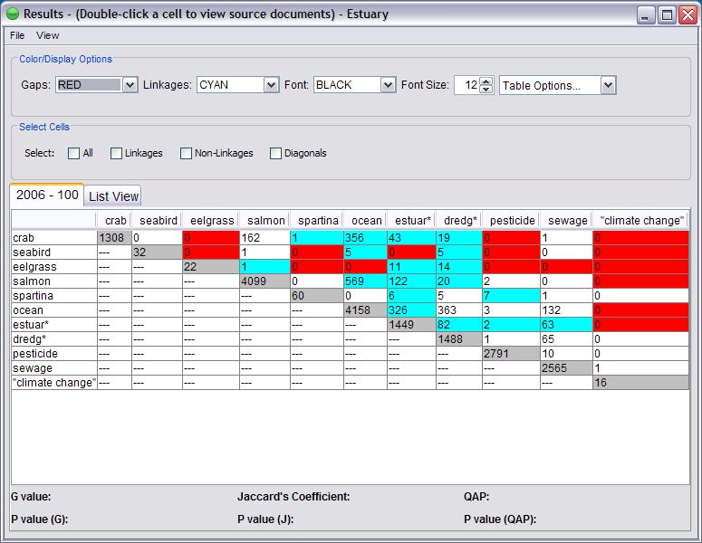
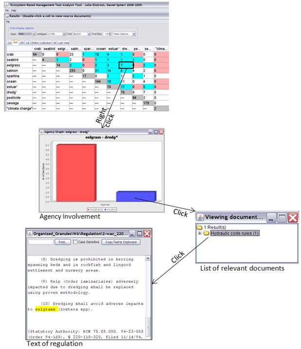
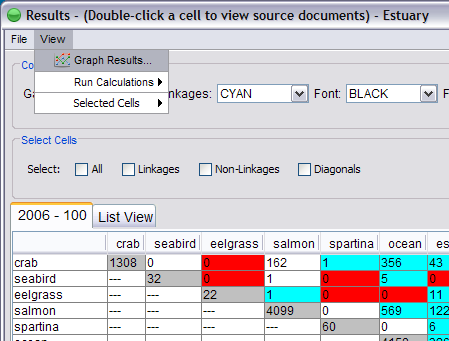

2. Interacting with the Results Table
The results are presented in the same structure as the ecosystem model input (matrix). Each cell contains the number of sections of law in which the two corresponding ecosystem elements co-occur. The diagonal cells (in gray) contain the number of sections in which each element (represented by its term or set of terms) occurs in the geopolitical jurisdiction.
The default colors represent the following:
Red (gaps): Relationships (between two elements) that were modeled in the ecosystem, but the elements do not co-occur in any section of law.
Blue (linkages): Relationships (between two elements) that were modeled in the ecosystem, and the two elements do co-occur in at least one section of law.

A list of documents that corresponds to the two terms (elements) may be viewed by double-clicking on any of the cells that contain 1 or higher. From the document list window it is possible to also view the text of individual sections by opening (double clicking) the file name.

The text of each section is fully searchable, with a search box at the top.
*Note: This diagram contains screenshots from the beta version, but the functionality is the same.
To display a graph of the results, select Graph Results under the View menu.

See the visualization help section for more information about the Visualization module and graphing results.